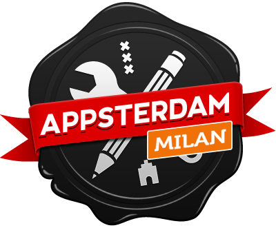
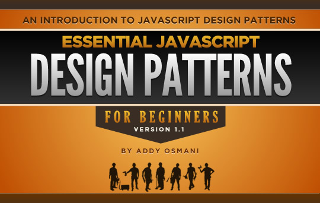

Appsterdam Workshop #1
Web Apps con AngularJS

a cura di Salvatore Laisa
{{e.titolo}}

{{e.testo}}
a questo punto la domanda lecita:
DESIGN PATTERN
che cosa sono?

{{e.titolo}}
{{e.testo}}
Appsterdam Workshop #1
Q&A
fate domande e (forse) avrete risposte
in conclusione...
GRAZIE
by Appsterdam Milano team & Coworking Login
Una nota su queste slide
- Realizzate in HTML + CSS + JS
- Impress.js per animazioni e navigazione
- AngularJS per logiche e templating
- Google Font per il carattere (Roboto Sans)
- Subtle Patterns per lo sfondo